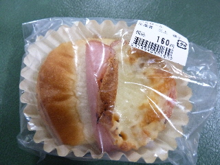

石窯工房KOTAのハムロール
2011/10/29
道の駅布野で販売していたパンです。
石窯工房 KOTAってところのパンみたいです。

ハムが乗ってますよね。
ハムは中にも入っていました。ハム味がいっぱいして美味しかったです。
ハムにコショウが付いてたので、ちょっとシパイシーでした。
近頃はいろんな場所の道の駅でパンが買えていいですね。
お出かけした時は、道の駅に寄るのが楽しみです。
三次市布野町上布野1507-2
2011/10/29
道の駅布野で販売していたパンです。
石窯工房 KOTAってところのパンみたいです。

ハムが乗ってますよね。
ハムは中にも入っていました。ハム味がいっぱいして美味しかったです。
ハムにコショウが付いてたので、ちょっとシパイシーでした。
近頃はいろんな場所の道の駅でパンが買えていいですね。
お出かけした時は、道の駅に寄るのが楽しみです。